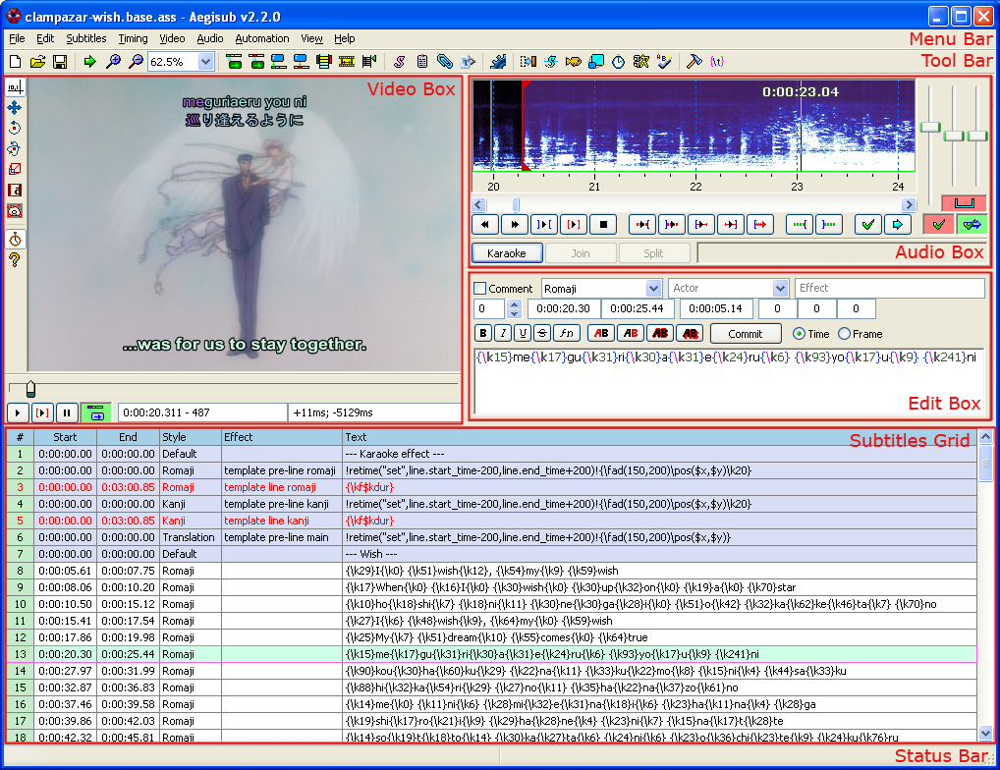

Aegisub / Overview

This screenshot shows the Aegisub main window with everything open:
The two most important areas are the Subtitles Grid and Edit Box.
The grid shows all the subtitle lines in the file you're working with. Lines are marked with different colours depending on their properties. For example, lines with green background are selected. Lines with blue background are marked as comments and won't be shown on screen. Lines with a light yellow background are visible on the current video frame. Lines with red text overlap in time with a currently selected line. Click a line here to select it for editing.
The edit box is where you can edit the text and other properties of a subtitle line directly. While you can enter times in the time boxes here, you will rarely need to, as it's much faster to time lines using the audio box. You can also time to video. You can use the formatting toolbar to insert formatting codes into the current line. The four "AB" buttons change the colours of different elements of the line. Change the text for the subtitle and press Enter to commit the changes and go to the next line. Holding Ctrl while pressing Enter will stay on the line instead of going to the next, but still commit the changes.
Use the audio box to time subtitles (synchronize them to audio) in a fast and accurate way. The audio display can show the audio you have loaded in two different ways, waveform and spectrum, the screenshot above shows it in spectrum mode.
The video box allows you to see how the subtitles will look on the video, but it also allows you to select specific video frames a subtitle line should start/end on, and it allows you to use the mouse to position, rotate and crop a subtitle line to for example match an onscreen sign in the video.
Finally, there are three bars in the program: the status bar is used to show status messages to you, and the menu bar and tool bar are used to access Aegisub's myriad of tools: